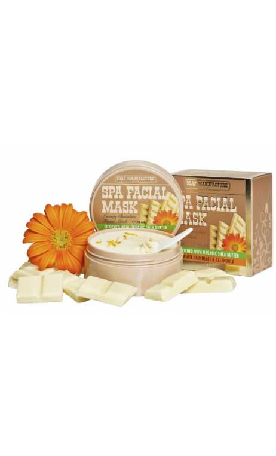

| ID | RECETA | NOMBRE | CANTIDAD | DESCRIPCIÓN (RECETA) |
|---|---|---|---|---|
| 301 |  | MASCARILLA DE CALENDULA (Pieles Mixtas) | 10 | 1.Disuelve a baño maría 7 g de cera de abeja, 5 g de manteca de cacao y 10 g de lanolina hasta que la combinación adquiera una textura vidriosa.
2. Añade 25 g de aceite de caléndula, calentando ligeramente. 3. Incorpora una infusión de flor de caléndula. Una vez fría, aplica en el rostro y deja 15 minutos. 4. Retira con suficiente agua. |